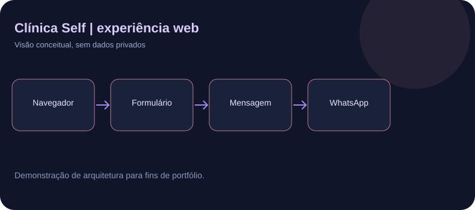

O desafio
Apresentar especialidades, informações de atendimento e canais de contato da clínica em uma interface adaptada a dispositivos móveis.
O que o código contém
Estrutura semântica HTML, estilos CSS e scripts JavaScript para navegação mobile, carrossel interativo com suporte a toque e controles acessíveis, e montagem de uma mensagem de triagem no WhatsApp.
Detalhes técnicos e limites
A triagem prepara texto numa URL do WhatsApp e não constitui chatbot nem integração com a API Business. A tag do Google Analytics 4 está no HTML, mas não comprova resultados de tráfego ou conversão.
Minha participação
Participei das decisões de conteúdo, experiência, requisitos e validações do site. O código foi desenvolvido com assistência de IA generativa.
Demonstração sugerida
Visitar a página em desktop e celular, testar o menu e o carrossel, e utilizar dados fictícios na triagem. Não expor dados reais de pacientes ou clientes.
